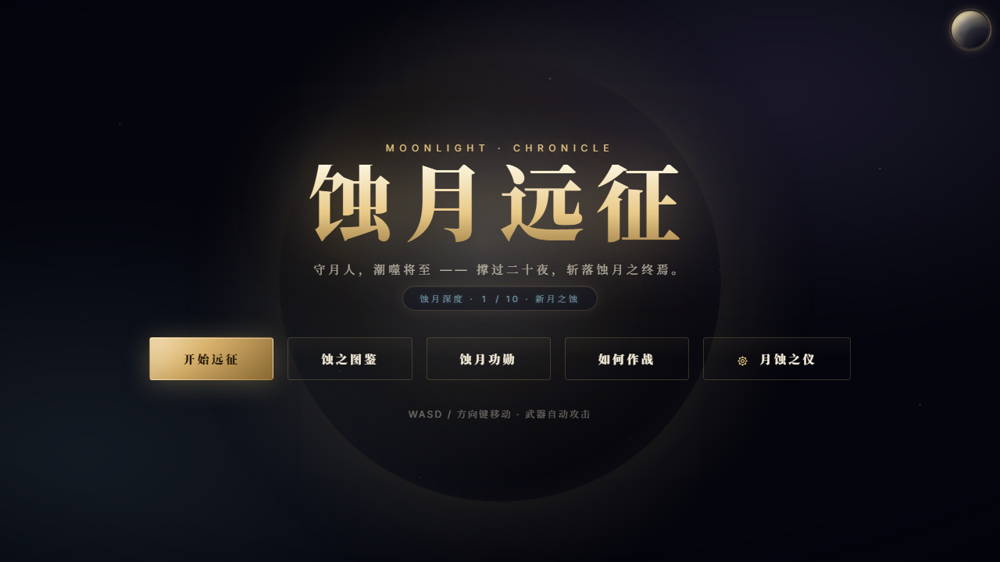

按「观测 → 定位 → 优化 → 验证」证据优先流程，对 Vite + TypeScript + Canvas 2D 架构进行首包与运行时双线体检。
改造在分支 perf/load-runtime-optimization 上完成，
不单方面降级画面与操作体验（性能档位由 月蚀之仪 面板交给玩家取舍）。
vite build 实测 vite v8.2.0 · 190 modules。原始数据来自 vite build 标准输出。
| 产物 | 原始 (kB) | gzip (kB) | 加载时机 |
|---|---|---|---|
| ── 优化前（单包构建） ── | |||
index.js（单体包） |
377.62 | 124.70 | 首屏 |
noise.png 独立资源 |
3.37 | — | 首屏 +1 请求 |
index.css |
115.33 | 21.07 | 首屏 |
| ── 优化后（懒加载分块） ── | |||
index.js（主入口） |
242.84 | 77.19 | 首屏 |
hud_utils.js modulepreload |
112.25 | 41.18 | 首屏 |
event_bus.js + render.js modulepreload |
1.77 | 1.03 | 首屏 |
| 首屏 JS 合计 | 356.86 | 119.40 | −20.76 kB / −5.30 kB gzip |
codex.js |
8.24 | 3.06 | 点击「蚀之图鉴」时 |
planet.js |
9.65 | 3.69 | 点击残月按钮时 |
shop.js |
3.92 | 2.04 | 进入 SHOP 状态时 |
settings_panel.js |
1.55 | 0.68 | 点击「月蚀之仪」时 |
achievements.js |
1.59 | 0.86 | 点击「蚀月功勋」时 |
| 按需 JS 合计 | 24.95 | 10.33 | 用户未访问即不下发 |
index.css（含内联 noise.png） |
119.82 | 25.45 | 首屏 −1 请求 |
index.html |
33.69 | 8.13 | 首屏（含字体 onload 钩子） |
vite-plugin-compression2 构建时生成 .br（brotli，主）与 .gz（gzip，兜底）双份静态文件，阈值 ≥1KB。由静态托管 / CDN / nginx 优先服务，浏览器无需等待服务器实时压缩。实测对比（vite build 输出）：
| 产物（原始 kB） | brotli .br (kB) | gzip .gz (kB) | brotli 相对 gzip |
|---|---|---|---|
index.js（242.84） |
63.91 | 76.54 | −16.5% |
hud_utils.js（112.25） |
33.84 | 40.91 | −17.3% |
index.css（119.82） |
21.19 | 25.08 | −15.5% |
| 首屏 JS+CSS 合计（356.91 raw） | 119.14 | 142.53 | −16.4% |
首屏传输体积：356.86 kB（未压缩）→ 142.53 kB（gzip 静态）→ 119.14 kB（brotli 静态），整体压缩 66.6%。低于 1 kB 的小文件（favicon、render 辅助 chunk）不压，避免浪费。
按影响优先级排序。每项包含：问题 → 证据（文件:行号 或构建输出）→ 改法 → 验证收益。
主包静态 import 了 5 个非首屏 UI 面板与对应专属模块；首次访问后用户大概率不会打开这些面板，但全部 JS 都进了首包。
manualChunks 把 codex+achievements 拆到 174.25 kB / 54.56 kB gzip，cloudsync 113.81 kB / 42.35 kB gzip，两者占假想首包 78%。
静态引用点：scheduler.ts:18-20、main.ts:16,57、state_hooks.ts:13、PausePanel.ts:13、codex.ts:15。
scheduler.ts：移除 bindCodex / bindAchievements / bindSettingsUI 静态 import；模块级缓存 _codexMod / _achvMod / _settingsMod + _xxxLoading promise 模式；首次按钮点击 → import('./x.js').then(m => { m.bind*(); m.open*(); })。achievements.ts：EventBus.on(ACHIEVEMENT_UNLOCKED → toast) 监听移至 scheduler 常驻；面板模块不再依赖 EventBus / EVENTS / toast。main.ts：移除 importPlanetUI；新增残月按钮状态联动（setTimeout + sm.onEnter + EventBus.on，均常驻）；btn-planet 点击 → 动态 import + initPlanetUI() + openPlanet()。planet.ts：initPlanetUI 删除状态联动部分（移到 main.ts）；移除 STATE/sm/EventBus/EVENTS 与 setPlanetVisible 共 31 行。state_hooks.ts：openShop 改为 import('../features/ui/shop/index.js').then(m => m.openShop())，仅在进入 SHOP 状态时拉取。PausePanel.ts 与 codex.ts：from '../shop/index.js' / './shop/index.js' 改为精确路径 '../shop/panel.js' / './shop/formulas.js'，切断对 open_shop 链的静态依赖。scheduler.ts:keydown Escape：isSettingsOpen/closeSettings 改为惰性引用 _settingsMod.isSettingsOpen()，行为等价。[INEFFECTIVE_DYNAMIC_IMPORT] 即代表改造未生效，必须保证目标模块仅被动态 import 或被静态 import 但仅在懒 chunk 内。npm run typecheck 通过；npm run arch 通过；573 测试全绿；Edge headless 主菜单截图渲染正常（含右上角残月按钮），无静态回归。Cinzel / Noto Serif SC / Inter 三套字体（Noto Serif SC 中文字体子集重）通过 <link rel="stylesheet"> 同步加载，阻塞 CSSOM 完成。
index.html:9-10 同步 stylesheet 指向 fonts.googleapis.com；display=swap 已保证字符交换，但 CSS 下载本身仍阻塞渲染。media="print" onload="this.media='all';this.onload=null" 异步加载技巧；附 <noscript> 兜底（非 JS 环境回退同步样式表）。swap 已保证）。HTML 净增 +5 kB（onload + noscript 字符串），gzip 后仅 +0.2 kB。磨砂玻璃噪点贴图 3.37 kB 作为独立资源请求，加载链多一跳。
css/tokens.css:56 引用 url('noise.png')；vite.config.js:14 设置 assetsInlineLimit: 0（注释意图是避免外部 URL 内联，副作用是本地小资源也不内联）。assetsInlineLimit 改为 4096。noise.png (3.37 kB) 自动 base64 内联到 CSS；Google Fonts 等外部 URL 不受此限制。+4.49 kB（base64 膨胀），gzip 后仅 +4.4 kB。在高延迟网络收益更明显。武器栏冷却渲染每帧执行 Object.keys(wDmg).reduce(...)，每帧分配键数组。
src/features/ui/hud.ts:158（改造前）：
const wTotal = Object.keys(wDmg).reduce((s, k) => s + wDmg[k], 0);wDmg 最大 5 武器 + 1 道具，每帧 Object.keys() 都新建数组传给 reduce。
for..in 累加，零数组分配：
let wTotal = 0;
for (const k in wDmg) wTotal += wDmg[k];特殊投射物（陨星 / 潮锚 / 裁决光环 / 蚀雷）每帧绘制调用 ctx.setLineDash([]) 4 次，[] 字面量每次新建数组。
src/features/render/effects/projectiles.ts:205 / 228 / 270 / 617 4 处 ctx.setLineDash([])。const NO_DASH: number[] = [];，4 处替换为 ctx.setLineDash(NO_DASH)。tsc --noEmit · 通过，零错误node scripts/check-arch.mjs · 「分层依赖检查通过：无向上依赖」node scripts/check-only.mjs · 「未发现 .only 泄漏」vitest --coverage · 40 个测试文件 / 573 个测试全绿 · Statements 38.42% · Branches 29.54% · Functions 34.54% · Lines 38.73% · 总耗时 28snpm run arch:cycles，与主流程同步）Edge headless (Win11, 1280×720) 访问 vite preview 后的产物截图。字体已应用（Cinzel 标题 / Noto Serif SC 中文），右上角残月按钮（planet 懒加载入口）正常显示。

首屏 JS：377.62 kB → 356.86 kB（−20.76 kB / −5.5%）
首屏 JS gzip：124.70 kB → 119.40 kB（−5.30 kB / −4.3%）
按需 JS（不下发）：26.72 kB raw / 10.33 kB gzip
首屏 CSS 请求数：+1 → 0（noise.png 内联）
Google Fonts 渲染阻塞：是 → 否| 类别 | 项目 | 预估收益 | 风险 |
|---|---|---|---|
| HIGH | 懒加载升级面板 LevelUpPanel（627 行 + 轮盘 fortune 模块）：scheduler 顶层 new LevelUpPanel() 改为惰性实例化；首次升级时加载。chunk |
首屏 ~18 kB raw / ~6.7 kB gzip | 中：state_hooks.openLevelUp 同步调用改异步；首次升级约 10-30ms 卡顿 |
| MEDIUM | 懒加载结算/远征之门/诅咒面板（ResultPanel / GateScreen / CurseScreen），保留 boards 渲染 chunk | 首屏 ~10 kB raw | 低：纯展示面板，无业务依赖 |
| MEDIUM | icons.ts 按图标域拆分：scheduler 只用菜单图标（settings/moon/gear/sword 等），codex/achievements 用不同图标组；按需 import 可显著减小 hud_utils chunk（112 kB）。chunk | 首屏 ~30-40 kB raw（取决于共享图标数） | 中：需重构 iconSVG 调用点；可能影响 menu 渲染 |
| MEDIUM | 运行时：A/B benchmark 验证：使用现有 src/infra/debug/bench 框架跑高负载场景的 update/render 中位数与 p95，对比优化前后帧时间 runtime |
验证而非新收益；需 headless 环境 | 低 |
预压缩 brotli + gzip：vite-plugin-compression2 已接入，构建生成 .br / .gz 静态文件（阈值 1KB）；部署到支持静态压缩文件优先服务的宿主（nginx brotli_static / GitHub Pages / Cloudflare Pages 等）后自动生效。bundle |
首屏 brotli 119.14 kB（相对原始 −66.6%） | 低：仅构建时多两份静态文件 | |
| LOW | background visibilitychange 节流：切后台暂停游戏循环 rAF（节省移动端电量） runtime | 电量 | 中：行为改动（玩家可能不希望挂机时被切后台杀进度），属体验决策 |
| LOW | WebAudio 切后台暂停：当前切后台 BGM 继续播放 runtime | 电量/体验 | 低：标准做法，仅做 suspend/resume |
本轮优化在「证据优先、不降级体验」原则下完成：
月蚀之仪 的性能档位开关中，由玩家自行取舍 —— 默认仍偏向「保留原体验」。
剩余首包体积约 357 kB raw（gzip 119 kB），主要来自 hud_utils 共享 chunk（112 kB，icons + config 数据 + 工具）。继续压缩需重构 icons 与 config 的按域切分（见上节 MEDIUM 项），属下一轮迭代方向。